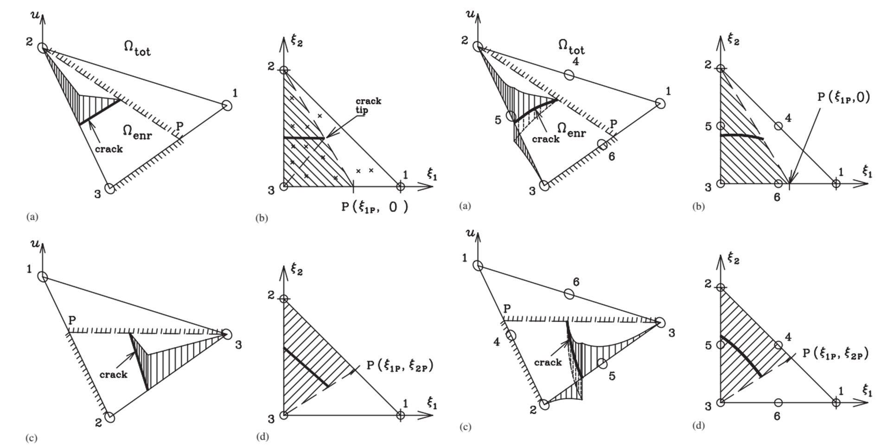
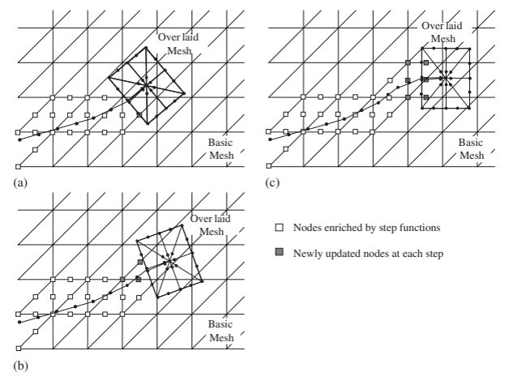
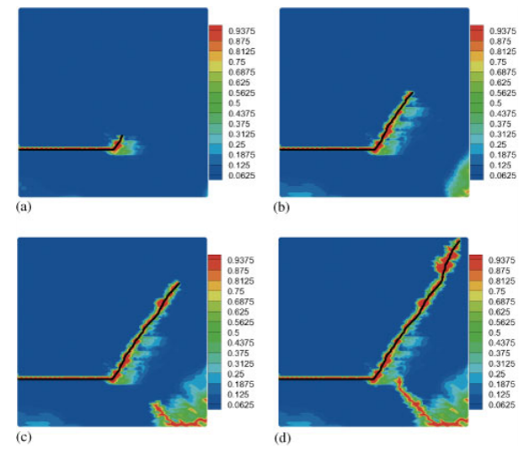

How Does XFEM Let a Crack Cut Through the Mesh?
The approximation space—not the element boundary—is given the information needed to represent fracture
Computational Fracture Series: ← Overview · Article 2 of 7 · Next: XEFG →
In an ordinary finite element analysis, the mesh does two jobs at once.
It discretizes the body, but it also strongly constrains the functions that can be represented inside that body.
For most structural problems this is exactly what we want.
Fracture is different.
A crack introduces an internal displacement discontinuity that may cut directly through an element. If the finite element approximation remains unchanged, it has no way to represent that jump inside the element.
The traditional response is obvious:
Make the mesh follow the crack.
That works, but as the crack grows the mesh must also change.
The extended finite element method (XFEM) asks a fundamentally different question:
Why should the mesh have to follow the crack at all?
Instead of modifying the mesh to imitate the geometry of the discontinuity, XFEM modifies the approximation space so that the displacement field can contain the discontinuity.
That distinction is the central idea of this article.
XFEM does not make the mesh follow the discontinuity. It makes the approximation space capable of containing the discontinuity.
What is missing from the ordinary finite element approximation?
Consider the standard finite element approximation
\[ \mathbf{u}^h(\mathbf{x}) = \sum_{I=1}^{n} N_I(\mathbf{x})\mathbf{u}_I, \]
where \(N_I\) are the usual shape functions and \(\mathbf{u}_I\) are nodal displacement degrees of freedom.
Inside an ordinary element, this interpolation produces a displacement field with the continuity implied by those shape functions.
Now introduce a crack.
Across the crack faces,
\[ [\![\mathbf{u}]\!] = \mathbf{u}^{+}-\mathbf{u}^{-} \neq \mathbf{0}. \]
The physical solution contains a jump.
The ordinary finite element space does not.
This is the numerical conflict.
We can resolve it geometrically by placing element boundaries along the crack, because displacement continuity is not enforced between disconnected element faces.
But then the crack path becomes tied to the mesh.
For a stationary crack whose geometry is known beforehand, this may be acceptable.
For a growing crack, it becomes restrictive.
The old solution: move the mesh with the crack
Suppose the crack advances through a conventional finite element mesh.
A typical remeshing procedure is
solve
→ determine crack growth
→ extend the crack
→ construct a new mesh
→ transfer variables
→ solve againFor a single slowly growing crack this is possible.
But fracture problems quickly become more difficult.
What happens when:
- the crack turns sharply?
- several cracks grow simultaneously?
- cracks coalesce?
- a crack branches?
- the material is history dependent?
- the crack propagates dynamically?
The numerical machinery for maintaining the mesh can become comparable in complexity to the fracture calculation itself.
This motivated a different philosophy:
keep the background mesh
+
change the approximation locallyPartition of unity gives us a way to add information
The key mathematical mechanism behind XFEM is the partition-of-unity property of finite element shape functions:
\[ \sum_I N_I(\mathbf{x}) = 1. \]
Because of this property, additional functions can be introduced locally through products with the ordinary shape functions.
A generic enriched approximation can be written as
\[ \mathbf{u}^h(\mathbf{x}) = \sum_{I\in\mathcal{N}} N_I(\mathbf{x})\mathbf{u}_I + \sum_{J\in\mathcal{N}_{\mathrm{enr}}} N_J(\mathbf{x}) \Psi(\mathbf{x})\mathbf{a}_J. \]
The first term is the ordinary finite element approximation.
The second term contains new degrees of freedom \(\mathbf{a}_J\) multiplied by an enrichment function \(\Psi\).
This changes what the approximation can represent without changing the background mesh topology.
The enrichment is therefore not just an additional numerical term.
It contains information that the original approximation lacks.
For fracture, the most obvious missing information is the displacement jump.
Representing the crack interior
For a crack that completely cuts the support of an enriched node, a discontinuous function can distinguish the two sides of the crack.
Schematically, a Heaviside-type function may be written as
\[ H(\mathbf{x}) = \begin{cases} +1, & \mathbf{x}\ \text{on one side of the crack},\\ -1, & \mathbf{x}\ \text{on the other side}. \end{cases} \]
Then an enriched field contains terms such as
\[ N_J(\mathbf{x})H(\mathbf{x})\mathbf{a}_J. \]
Because \(H\) jumps across the crack, the approximation can jump there too.
This is the essential mechanism.
The element itself has not been split into two conventional elements.
Its interpolation has been given enough freedom to represent two different displacement states on opposite sides of the crack.
This leads to a useful interpretation:
ordinary DOFs
describe the regular displacement field
enriched DOFs
describe the additional kinematics created by the crackThe crack is therefore represented in the solution space, not by forcing the element boundaries to trace it.
But the crack cannot remain open through its tip
A discontinuous enrichment works naturally along the interior of a crack.
The crack tip is more subtle.
Behind the tip,
\[ [\![\mathbf{u}]\!] \neq 0. \]
Ahead of the tip, the material is still connected, so
\[ [\![\mathbf{u}]\!] = 0. \]
The displacement jump must therefore terminate correctly.
This is one of the central difficulties in enriched fracture formulations.
Classical XFEM for linear elastic fracture mechanics often introduces near-tip branch functions derived from the asymptotic crack-tip solution.
In two-dimensional isotropic LEFM, the local displacement structure contains functions of the form
\[ \sqrt{r}\, \left\{ \sin\frac{\theta}{2}, \cos\frac{\theta}{2}, \sin\frac{\theta}{2}\sin\theta, \cos\frac{\theta}{2}\sin\theta \right\}, \]
where \((r,\theta)\) are local polar coordinates at the crack tip.
These functions are valuable because they insert known crack-tip behavior directly into the approximation.
But this raises an important modeling question:
What if the fracture model is cohesive rather than classical LEFM?
Cohesive cracks change what we should expect at the tip
In a cohesive crack model, traction does not necessarily drop immediately to zero when the discontinuity forms.
Instead, traction is related to the crack opening.
Conceptually,
\[ \mathbf{t} = \mathbf{t}\left([\![\mathbf{u}]\!]\right). \]
The area under the traction-separation relation represents fracture energy.
This changes the local crack-tip physics.
The classical traction-free LEFM asymptotic field is no longer automatically the natural description of the cohesive tip.
One of my early contributions with Ted Belytschko addressed this issue directly.
We developed new crack-tip elements for XFEM so that a cohesive crack could terminate inside an element while the opening closed appropriately at the tip.
The objective was practical as well as theoretical:
- avoid unnecessary remeshing,
- permit arbitrary crack growth,
- maintain cohesive crack closure,
- and simplify crack-tip treatment.
This illustrates a broader principle about enrichment:
The enrichment function should reflect the physics that is missing from the ordinary approximation.

Figure Figure 1 should be read from kinematics to consequence: the crack is allowed to cut the element, but the discontinuity cannot simply continue through the tip. The crack-tip treatment supplies the missing closure condition without forcing the mesh boundary to coincide with the crack.
Using a sophisticated enrichment simply because it is mathematically available is not necessarily better.
Another way to localize crack-tip resolution
Enrichment was not the only way we explored the separation between the crack and the global mesh.
In the combined extended and superimposed finite element method, the background finite element model is retained while a specialized local mesh is superimposed near the crack tip. The extended approximation handles the discontinuity away from the tip, while the local superimposed discretization supplies additional resolution where the crack-tip field demands it.
Conceptually,
global mesh
→ efficient representation of the structure
XFEM enrichment
→ crack discontinuity independent of global element edges
local superimposed mesh
→ additional crack-tip resolution where it is usefulThe important idea is not to refine the entire global mesh merely because one small region contains difficult fracture mechanics.

Figure Figure 2 illustrates a broader computational strategy: put numerical resolution where the physics requires it, rather than making the whole discretization pay the same cost.
The mesh and the crack now become separate geometries
Once the crack no longer has to coincide with element edges, we need a way to describe its position independently of the mesh.
This is where implicit descriptions such as level sets become useful.
One scalar field can indicate which side of the crack a point lies on. Another can locate the crack tip relative to the crack direction.
Conceptually,
\[ \phi(\mathbf{x}) = 0 \]
may describe the crack surface or its supporting surface, while a second function helps identify the tip.
The important idea is not the exact notation.
It is the separation of responsibilities:
mesh
→ numerical discretization of the body
crack description
→ geometry of the discontinuity
enrichment
→ kinematics associated with the discontinuity
fracture criterion
→ crack initiation and propagationThese four pieces can evolve with a degree of independence.
That modularity is one reason XFEM became so useful.
Integration becomes harder even though remeshing disappears
Removing remeshing does not make fracture numerically trivial.
A crack cutting through an element divides the integration domain.
The displacement approximation may be discontinuous even though the element remains geometrically intact.
Therefore ordinary Gauss integration over the uncut element may no longer be appropriate.
The integration procedure must recognize the internal discontinuity.
A common strategy is to subdivide the cut element into integration subdomains that conform to the crack for quadrature purposes.
This is an important distinction:
The mesh does not have to conform to the crack, but the numerical integration must still understand where the crack is.
XFEM therefore trades one difficulty for another.
It greatly reduces topological remeshing, but introduces challenges in:
- enrichment selection,
- numerical integration,
- blending regions,
- conditioning,
- crack-tip treatment,
- and evolving crack geometry.
This is a recurring lesson in computational mechanics.
A powerful representation does not eliminate numerical difficulty.
It moves the difficulty to a place where it may be easier to control.
Growing cracks without remeshing
Once the crack geometry and the approximation are separated, crack growth becomes conceptually much cleaner.
A propagation step can be thought of as
solve current configuration
↓
evaluate fracture criterion
↓
determine propagation direction
↓
extend crack geometry
↓
update enriched nodes
↓
integrate new cut domains
↓
solve againThe background finite element connectivity need not be rebuilt.
This was central to our work on arbitrary and multiple crack growth.
The benefit becomes especially apparent when several cracks are present.
With conventional remeshing, each crack modifies the geometric constraints imposed on the next mesh.
With enrichment, multiple cracks can be treated as evolving discontinuity objects embedded in the same background discretization.
Dynamic fracture: the crack moves while the body accelerates
Dynamic fracture adds inertia:
\[ \mathbf{M}\ddot{\mathbf{u}} + \mathbf{f}_{\mathrm{int}} = \mathbf{f}_{\mathrm{ext}}. \]
Now the crack evolves during a transient structural response.
The calculation must determine not only whether the crack grows, but how the moving discontinuity interacts with stress waves, inertia, cohesive dissipation, and rapidly changing local fields.
In our dynamic XFEM work, local partition-of-unity enrichment and implicit crack descriptions allowed cracks to propagate along arbitrary paths while the triangular background mesh remained fixed.
The important achievement was not merely producing a curved crack.
It was maintaining the separation:
moving physical discontinuity
≠
fixed numerical meshThis made complex dynamic crack trajectories much more manageable.

Figure Figure 3 is important for what it demonstrates numerically: the physical discontinuity evolves while the background discretization remains a computational scaffold. The crack path is therefore governed by the fracture formulation rather than by a requirement that it follow element edges.
Multiple cracks point to the next problem
Once one crack can move independently of the mesh, the natural next question is what happens when several cracks evolve at the same time.
Our subsequent work treated multiple crack growth, fatigue, coalescence, and changing crack topology without reconstructing the background mesh after every event. Those problems reveal another level of difficulty: the numerical method must follow not only moving crack tips, but an evolving network of discontinuities.
That deserves its own article. Here, the important point is simply that geometry-independent enrichment makes such topology-changing problems possible without making remeshing the central algorithm.
What information should enrichment contain?
XFEM suggests a very general computational question:
What does the exact or expected solution know that the ordinary approximation does not?
For a crack interior:
missing information = displacement jumpFor a classical crack tip:
missing information = characteristic near-tip fieldFor a material interface:
missing information = derivative or field discontinuityFor other localized phenomena, another enrichment may be appropriate.
The finite element polynomial basis does not have to discover every difficult feature from scratch.
If physically justified information is already known, it can be inserted into the approximation.
This is why enrichment is more than a fracture technique.
It is an approximation strategy.
Is XFEM always better than remeshing?
No.
If a crack path is known and simple, a conforming mesh may be perfectly adequate.
If the geometry is fixed, the additional implementation complexity of enrichment may not be justified.
XFEM becomes especially attractive when the discontinuity:
- is not known beforehand,
- moves through the body,
- changes topology,
- interacts with other cracks,
- or would otherwise require repeated remeshing.
There are also costs.
Enriched systems may have:
- additional degrees of freedom,
- conditioning problems,
- difficult quadrature,
- blending errors,
- complicated three-dimensional crack tracking,
- and nontrivial implementation requirements.
The engineering question should therefore not be:
Is XFEM superior to FEM?
XFEM is a finite element method.
The useful question is:
Does enriching the approximation solve the particular representation problem more effectively than modifying the discretization?
XFEM and the Z Diagram
There is an interesting connection with the Z Diagram:
\[ F \leftrightarrow \sigma \leftrightarrow \varepsilon \leftrightarrow u. \]
For an uncracked continuum, we often imagine displacement \(u\) as a sufficiently smooth field from which strain is obtained through spatial differentiation.
A crack interrupts that simple picture.
The displacement field contains a discontinuity.
The strain description must distinguish the regular deformation of the bulk material from the localized separation at the crack.
The constitutive description may also split into:
bulk material
stress ↔ strain
crack interface
traction ↔ opening displacementThese are both energy-conjugate descriptions, but they operate on different kinematic objects.
For the bulk,
\[ \boldsymbol{\sigma}:\dot{\boldsymbol{\varepsilon}} \]
represents stress power per unit volume.
For a cohesive crack,
\[ \mathbf{t}\cdot[\![\dot{\mathbf{u}}]\!] \]
represents power per unit crack area.
XFEM gives the numerical displacement approximation enough structure to carry both the regular deformation and the displacement jump.
This is one reason fracture is such an instructive mechanics problem: it exposes assumptions about continuity that are usually invisible in ordinary finite element analysis.
What XFEM changed conceptually
The historical importance of XFEM is often summarized as:
cracks can be modeled without remeshing.
That is true, but I think it understates the deeper idea.
The more general shift was:
OLD QUESTION
How should the mesh be modified
to represent the solution?
↓
NEW QUESTION
How should the approximation space be modified
to represent the solution?This distinction influenced many later computational methods.
Once we accept that the approximation can carry information independently of the mesh, the same philosophy can be extended to interfaces, inclusions, singularities, localization, meshfree methods, isogeometric methods, and other enriched formulations.
From XFEM to XEFG
The next step in my own work followed naturally.
If the key idea is enrichment of the approximation rather than modification of the mesh, what happens when the underlying approximation is itself meshfree?
That question led to the extended element-free Galerkin method (XEFG).
The finite element mesh is replaced by particles and their domains of influence, but the essential challenge remains:
How should a discontinuity cut through the support of the approximation?
That will be the subject of the next article in this series.
Engineering takeaway
The most memorable lesson of XFEM is not a particular enrichment equation.
It is the distinction between discretization and approximation.
A mesh is a numerical scaffold.
It does not have to reproduce every geometric feature of the physical solution.
When the ordinary approximation lacks an essential feature, we can add that information directly to the approximation space.
For fracture, that feature is the discontinuity.
So the engineering principle is:
XFEM does not make the mesh follow the crack. It makes the approximation space capable of containing the crack.
And the broader computational-mechanics principle is:
Do not make the discretization imitate difficult physics when the missing physics can be represented directly in the approximation.
Continue the series
← Series overview: Why Is Computational Fracture So Difficult?
Original research
Zi, G., & Belytschko, T. (2003).
New crack-tip elements for XFEM and applications to cohesive cracks.
International Journal for Numerical Methods in Engineering, 57, 2221–2240.
https://doi.org/10.1002/nme.849
Belytschko, T., Chen, H., Xu, J., & Zi, G. (2003).
Dynamic crack propagation based on loss of hyperbolicity and a new discontinuous enrichment.
International Journal for Numerical Methods in Engineering, 58, 1873–1905.
https://doi.org/10.1002/nme.941
Zi, G., Song, J.-H., Budyn, E., Lee, S.-H., & Belytschko, T. (2004).
A method for growing multiple cracks without remeshing and its application to fatigue crack growth.
Modelling and Simulation in Materials Science and Engineering, 12, 901–915.
https://doi.org/10.1088/0965-0393/12/5/009
Budyn, E., Zi, G., Moës, N., & Belytschko, T. (2004).
A method for multiple crack growth in brittle materials without remeshing.
International Journal for Numerical Methods in Engineering, 61, 1741–1770.
https://doi.org/10.1002/nme.1130
Lee, S.-H., Song, J.-H., Yoon, Y.-C., Zi, G., & Belytschko, T. (2004).
Combined extended and superimposed finite element method for cracks.
International Journal for Numerical Methods in Engineering, 59, 1119–1136.
https://doi.org/10.1002/nme.908
Zi, G., Chen, H., Xu, J., & Belytschko, T. (2005).
The extended finite element method for dynamic fractures.
Shock and Vibration, 12, 9–23.